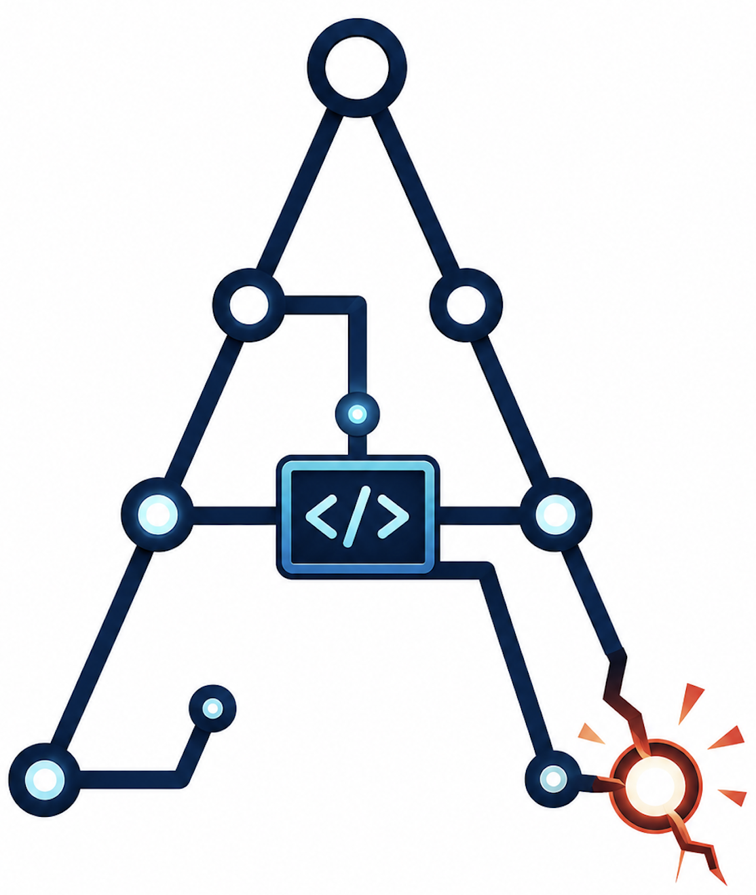
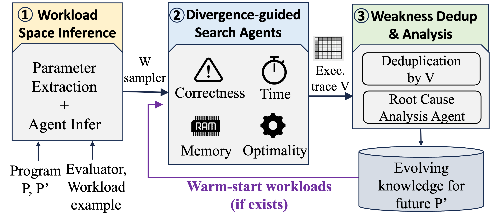

AIChilles Risk Discovery
Automatically uncovering hidden weaknesses in AI-evolved systems.

AIChilles Risk Discovery stress-tests a candidate program P′
(produced by an automated discovery / evolution system) against its reference
program P, and surfaces the workloads where P′ quietly goes wrong —
crashes, worse targeted performance, or blow-ups in time and memory. It explores inputs like
a fuzzer, but uses code coverage as a novelty signal and an LLM as the mutator,
then clusters confirmed weaknesses and explains their root cause.
Interactive results explorer
Browse real discovered weaknesses across 5 systems × 3 evolution frameworks × 2 LLMs — with side-by-side P vs P′ source (weakness lines highlighted), trigger workloads, and P-vs-P′ regression curves.
The four weakness types
| Type | What it means |
|---|---|
| correctness | P′ crashes, times out, or returns a wrong/invalid result. |
| scalab_time | P′ is dramatically slower as the workload scales. |
| scalab_mem | P′ uses dramatically more memory as the workload scales. |
| optimality | P′ runs fine but produces a measurably worse solution. |
Highlights
- 🔎 Coverage-guided, LLM-mutated search. A MAP-Elites loop uses
sys.settracecoverage as the novelty signal and an LLM as the workload mutator — chasing unseen code paths, not random noise. - 🐞 Four weakness types in one pass. Every oracle call checks correctness, time- and memory-scalability, and optimality simultaneously.
- 🧬 Auto-inferred input grammar. Reads the app's
evaluator.pyand writes agenerate_workload()sampler — no hand-written fuzz harness. - 🧠 Cross-run knowledge base. Confirmed weakness “seeds” persist per app and warm-start later runs, so discovery compounds.